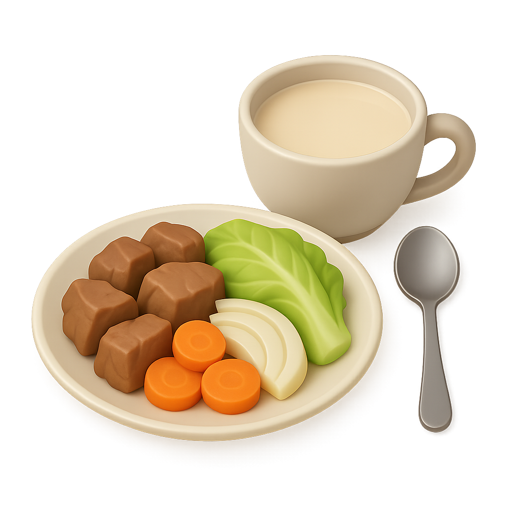
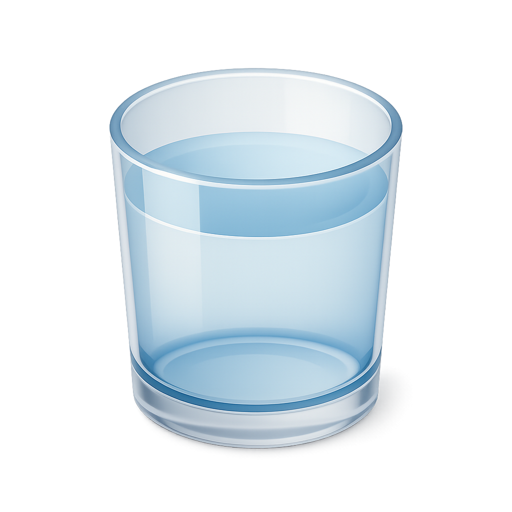
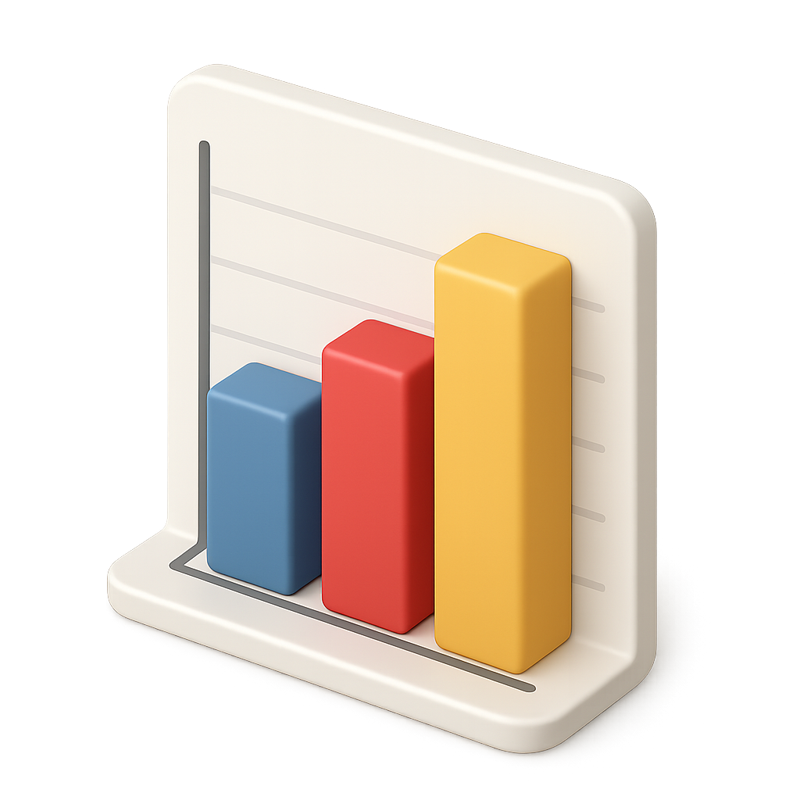

Know what's on your plate.
Take a photo of your meal and NutriScan does the rest: it reads the food, estimates the portion and logs your calories and macros.

1 tap
to scan a meal
4
macros tracked
3
portion sizes
24/7
meal history
Our mission
Healthy eating shouldn't feel like homework.
Most food trackers ask you to search, weigh and type every ingredient. We think that's why people give up after a week. NutriScan turns a photo into a logged meal, so tracking takes seconds instead of minutes.
Whether you're building muscle, managing your weight, or just curious, we want tracking to be quick, accurate and kind.

Beyond the plate
Small habits add up
Your dashboard also tracks your daily water goal, your streak and your body stats, so one screen shows how your day is going.
Open dashboard →How it works
From photo to logged meal in three steps.
Snap your plate
Use the scanner, or add a meal manually if you prefer.
We read the food
Ingredients and portion size are matched to nutrition data.

Track your day
Calories and macros update instantly, with stats to spot trends.
Simple
No clutter and no confusing numbers. Just what you need to know about your meal.
Personal
Goals and suggestions are tuned to your body stats and eating habits.
Private
Your meals and measurements are yours. We only use them to help you.
Common questions
How accurate are the estimates +
Scans give a close estimate based on the food and portion size. If something looks off, edit the meal and your totals update right away.
Can I log a meal without a photo +
Yes. Use "Add manually" on the dashboard, pick the meal type, enter the food and choose a portion size.
Where do my goals come from +
Your calorie and macro targets are based on the details in your profile. Update your height or weight and they adjust.
Questions or feedback?
We'd love to hear how NutriScan is working for you.